本ページでは、2017年の世界コンピュータ将棋選手権優勝ソフト「elmo」の導入方法(Windows版)を記載しています。
なお、Aperyの導入ページを参考にしています(感謝！)
。本手順は今後もう少し導入し易い＋分かり易いように整備したいと思います。
elmoのシステム要件は実行する将棋エンジン(以下では、やねうら王を利用しています)と同様となりますが、快適に動作するために以下環境を推奨します。
(※)現状のコンピュータ将棋プログラムは64bitOSを前提に作成されており、恐れ入りますが本ページで紹介する方法ではご利用することができません。
Windowsが64bit版であることを確認します。以下サイトを参考に64bit版であることをご確認お願いします。
elmoは評価関数(と定跡)に独自性を持つプログラムであり、それ以外の部分は既存プログラムを利用しています。2017年の世界コンピュータ将棋選手権ではやねうら王を利用致しましたので 本説明ではやねうら王を利用する方法をご説明いたします。
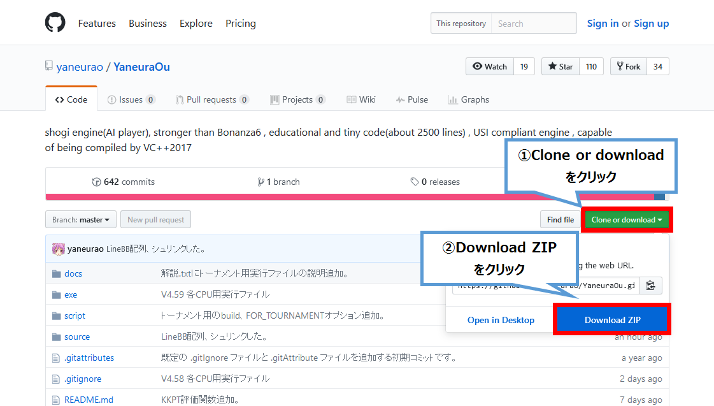
YaneuraOu-master.zipを適当なところに保存し、zipファイルを展開してください。以下のようにzipファイルが展開出来ていれば問題ありません。※下記は「表示」→「詳細」を選択している時の表示となります。同じ名前のファイルがあれば問題ありません。
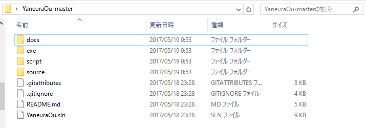
elmoの評価関数と定跡ファイルを取得します。 ←このリンクを押下してください。
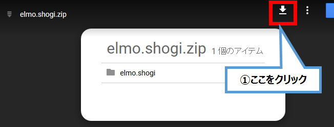
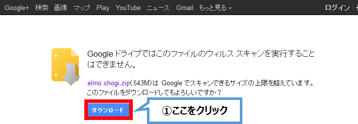
elmo.shogi.zipをダウンロードして、こちらも適当な場所に展開してください。以下のようにzipファイルが展開出来ていれば問題ありません。
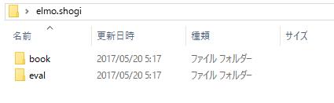
elmoの評価関数ファイルをやねうら王のフォルダに設置します。なお、以下コピーと記載されている部分は「切り取り」で問題ありません。
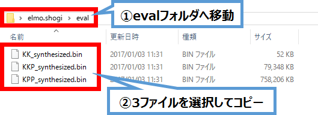
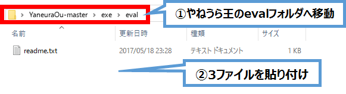
同様に、elmoの定跡ファイルをやねうら王のフォルダに設置します。
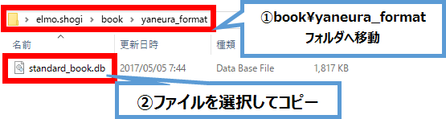
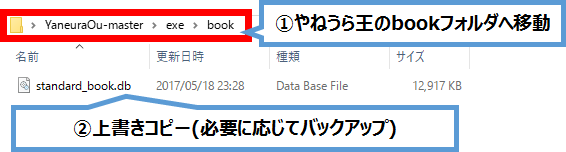
最後に出来上がったeval/bookフォルダを2017Earlyフォルダに移動します。
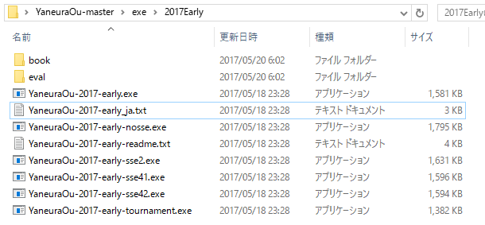
これでelmoの出来上がりです。将棋GUIソフト(例：将棋所)から利用します。
対局／検討するために将棋GUIソフトである将棋所を例に使い方を説明します。将棋所のwebサイトへアクセスし、将棋所をダウンロードします。
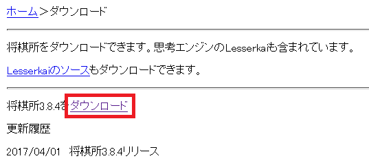
本ページ作成時の最新版は3.8.4でした。最新バージョンが異なる場合、最新のものをダウンロードしてください。
こちらもShogidokoro.zipを展開し、Shogidokoro.exeを実行してください。まずエンジン管理を開きます。
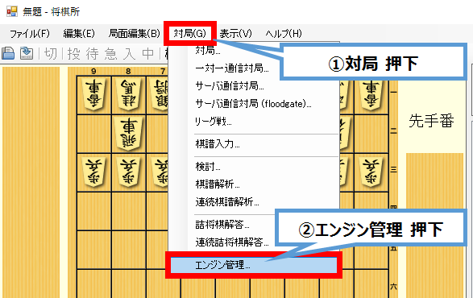
やねうら王(elmo)を設定します。
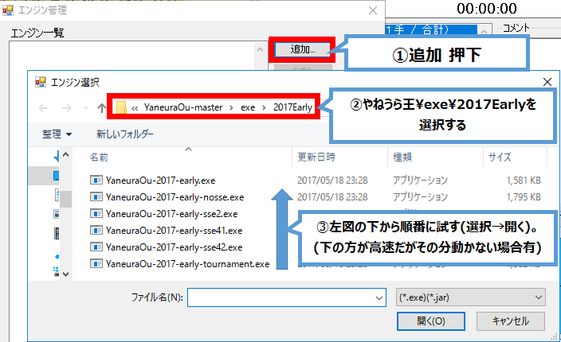
YaneuraOu-2017-early-tournament.exeが最も高速に動作しますが、2013年6月以降に発表されたCPUでしか利用できません。あまり難しいことを考えずに上図の下のファイルから順番に選択して、開いてみてください。正常登録出来ればそれが使えます。
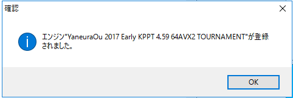
正常に登録された場合、上図が表示されます(*-tournament.exeを登録した場合のもの)
続いて、やねうら王(elmo)の設定をします。
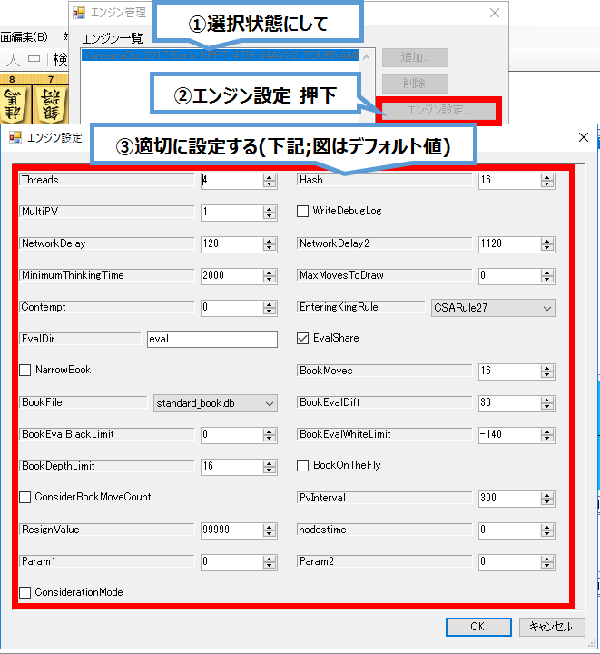
設定は以下変更を推奨します（変更の無いところは割愛しています）。
Threads: CPUコア数の2倍 Hash:
16(MB;メモリに余裕がある場合は32,64,128,256,512,1024と2倍ずつ増やしてみてください)
NetworkDelay: 0 (都度想定されるNW遅延(ms)) NetworkDelay2: 0
(最大で想定されるNW遅延(ms))
MinimumThinkingTime: 1000 BookMoves: 200 (定跡を200手まで採用する)
BookDepthLimit: 0 ConsiderationMode:
検討時にチェック、対局時はチェックしない。
各項目についてはやねうら王のdocs\USI拡張コマンド.txtやdocs\解説.txt に説明があります。
これで全ての設定が完了しました。対局／検討／棋譜解析をelmoで実行することができます。対局からそれぞれのメニューが選べます。
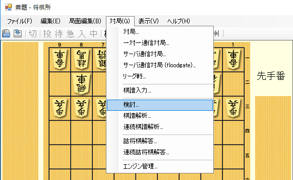